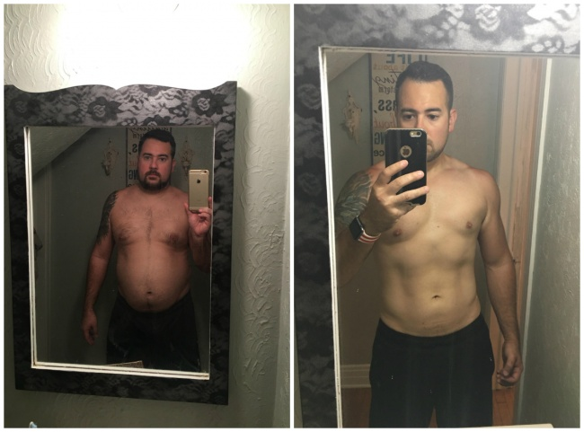

Světová zdravotní organizace je znepokojeno nadváhou Čechů. Inovativní způsob, jak zhubnout na 5 kg týdně bez diety a sportu!
Podle Světové zdravotnické organizace, nadváhou trpí v České Republice více než 50% žen a mužů ve věku 35–50 let, a každou sekundu toto číslo jen roste. Do roku 2025 PSZ předpovídá nárůst až o 65%. Odborníci na výživu uvedli portrét průměrného Čechá s nadváhou, obvykle to jsou lidí žijící ve městě, kteří konzumují mastná jídla, pijí alkohol nebo kouří. Málo se pohybují a zanedbávají sport. Lidé s nadváhou častěji trpí cukrovkou, mrtvicí, infarktem a rakovinou. Obezita ovlivňuje tělo jako celek, externě i interně. Viscerální bílý tuk ničí tělo zevnitř, obaluje jej a „jí“ vnitřní orgány. Srdce, krevní cévy, plíce, ledviny, klouby jsou hlavními oběťmi obezity, ale ne jedinými. Obezita není jen věcí krásy, je to otázka zdraví. A velmi závažná.
Dr. Michael Osterholm, epidemiologický specialista na infekční choroby, profesor, ředitel Centra pro výzkum na Universitě v Minnesotě.
Dlouho jsem studoval problém obezity v Čechách. Světová zdravotní organizace citovala děsivé výsledky statistiky- každý druhý Čech má nadváhu! Češi miluji se dobře najíst a vypit.
Dr. Maria Kučerová
Doktor, odborník na výživu, psycholog, kandidát lékařských věd
V problému nadváhy je třeba brát v úvahu nejen fyzické, ale i psychologické ukazatele. Pokud se jeden pacient může z lehkostí odmítnout nezdravé jídlo, jít sportovat a začít jíst správně, bohužel však většina z nich to nebude moci udělat. Každá osoba je individuální a každý problém obezity je také individuální. Pokud jeden pacient nabírá na váze kvůli sedavému životního stylu a přejídá se protože se nudí a jinný zase zajídá stres. Pro jiného pacienta je chutné jídlo odměnou - tak se člověk odměňuje například za těžký pracovní den nebo za zkoušku. Než začnete hubnout, je třeba se poradit s odborníky na výživu a také s psychologem, aby odborník pomohl zjistit, v čem je přesně problém a jak začít hubnout. Během mé práce jsem narazil na tisíc případů, kdy pacient potřeboval další motivaci ke zhubnutí nebo živý příklad, který mohl následovat. Velmi efektivními jsou kapky , jsou na základě přírodních výtažků a vitamínů, které jsou dnes v USA velmi populární, úspěšně spalují nebezpečný viscerální tuk, potlačují chuť k jídlu, dávájí člověku energii dělat něco zajímavého a pomáhají odvrátit pozornost od myšlenek na jídlo. A proto já i moje kolegové doporučujeme pacientům, kteří sami nedokážou zhubnout.
Lucie Nováková - 37 let, výsledek po 2 měsících užívání

Jsem velmi vděčná paní Dr. Marii Kučerové za to, žе byla velmi opatrná na mne, a s mým problém s nadváhou. A když mne poprosili abych vyprávěla svůj příběh, tak jsem samozřejmě souhlasila, protože nyní chápu, jak je důležité, aby si všichni čtoucí tento článek uvědomili, že můžou zhubnout. Je to možné. Nikdy jsem neměla nadváhu, a jako studentka jsem byla dokonce roztleskávačkou, sportovala jsem a vedla aktivní životní styl. Ale pak jsem se vdala, porodila dvě děti a už mi nezbyl čas na sebe. Po druhém porodu jsem si uvědomila, že nikdy nebudu mít ploché bříško jako předtím. Začínala jsem nabírat na váze, ale nic jsem nemohla s tím udělat. Rodina mi vzala veškerý můj čas a síly, jsem se na sebe vykašlala ale v určitém okamžiku jsem si uvědomila, že nemůžu se na sebe dívat v zrcadle. Nechtěla jsem se vidět, ale když jsem musela, nemohla jsem zadržet své slzy. Nenáviděla jsem své tělo. Moje postava byla ošklivá, pomačkaná, s ochablým břichem, celulitidou a ochablou kůží. Začala jsem nosit černé šaty, abych alespoň nějak ukryla své tělo. Přestala jsem dělat vlasy a malovat se, jak jsem to dělala dříve. A samozřejmě, problémy začaly s mým manželem Tomášem. Uvědomila jsem si, že to bylo kvůli mé nadváze. Koneckonců i sama sobě jsem byla nepříjemná, o jaké vášni s manželem můžeme mluvit? Vrchol se však stal, když jsme spolu s Tomášem byli v restaurací a náhodou jsme se setkali s naším společným přítelem z univerzity, nepoznal mě a řekl, že si myslel, že jsem Tomášova matka. Tomáš se začervenal hněvem a řekl ne, že jsem jeho manželka Lucka. Byla jsem strašně v rozpacích, cítila jsem se jako ošklivé monstrum, který vypadá o 20 let starší! Koneckonců, matce Tomáše je 55 let ... Běžela jsem na záchod, abych se nerozplakala přede všemi návštěvníky restaurace. Na záchodě jsem stála u zrcadla, podívala se na sebe a nemohla jsem se poznat! Dřív jsem byla zábavná, veselá, efektivní a sportovní děvče. Nyní v zrcadle byla žena středních let, s oteklými rysy obličeje, dvojitou bradou a velkým břichem, které se nedalo skrýt ani pod pytlovitým tričkem. Uvědomila jsem si, že musím zhubnout a naléhavě, jinak bych se z toho mohla zbláznit. Našla jsem si dietu a rozhodla jsem se ji dodržovat, přesněji řečeno - snažila jsem se.
Jelikož jsem vařila pro celou rodinu, bylo velmi obtížné neochutnávat, co jsem uvařila své milované rodině. Takže sem-tam jsem si dala několik sendvičů,nějakou tu buchtu, nebo pastu se sýrem a máslem k večeři ... A nemohla jsem odmítnout džusy, sodu, víno ... To trvalo asi tři měsíce, a žádného výsledku jsem nedosáhla. Dokonce jsem přibrala 3 kilogramy. Neustále jsem počítala kolik kalorií jsem snědla, a vyčítala jsem si že jsem tak slabá. Neustále jsem si nadávala jak vypadám. Už jsem byla zoufalá a na pokraji nervového zhroucení. Téměř jsem se rozhodla, že si udělám operaci, abych si umenšila žaludek, a pak jsem se dostala k paní Dr. Kučerové.
Ona mně vyslechla a řekla, že bez chirurgického zákroku mohu zhubnout a dosáhnout stejných výsledků. Protestovala jsem, protože jsem si vzpomněla na vlastní hubnutí, a na to že to byla zbytečná trata času. Ale paní doktorka byla neústupná a předepsala mi léčbu a kapky a řekla, že pokud nezačnu hubnout, dá mi povolení k operaci. Byla jsem velmi skeptická během prvního týdne používání ani jsem te výsledky nekontrolovala na váhách. Ale všimla jsem si, že mi džíny začaly sklouzávat! Byla jsem překvapena a rozhodla jsem se zvážit, výsledek je minus 5 kg! A to je za týden! A vlastně nic jsem pro to neudělala! Vedla jsem stejný způsob života, jedla jsem tolik, kolik jsem chtěla, a dokonce jsem si dávala i alkohol. Ale předci jen jsem zhubla! Poté jsem začala brát vážně hubnutí, viděla jsem výsledek a chtěla jsem ho zvětšit a zhubnout ještě více. Skoro úplně jsem odmítla sladké nápoje,začala pít více vody, chodit s dětmi ve večerních hodinách do parku na procházky. Dříve jsem prostě neměla na to sílu, ale teď jsem byla plna energie! Chtěla jsem se procházet!
Paní Dr. Kučerová poté co uviděla mé výsledky, mě objala a řekla, že je hrdá na to, že jsem zhubla sama bez provedení nebezpečných operací. Za dobu dvou měsíců používání jsem zhubla o 24 kg.
 Teď, když se dívám do zrcadla, vidím sama sebe. To je ta Lucie, kterou jsem vždy byla! Začala jsem znovu nosit krásné šaty, které mám tolik ráda! Začala jsem experimentovat s vlasy, nyní přemýšlím o světlejší barvě. Tomáš se na mě znovu dívá s obdivem, jako to bylo na vysoké škole. Když se na mě takto dívá, vzpomínám si na první den, kdy jsme se s ním setkali. Bylo to po zápase našeho týmu, byla jsem na stadionu a po zápase když on mě uviděl, tak prostě stuh a ani si nemohl odtrhnout ode mě svůj vzhled. Byl strašně plachý, i když byl velmi oblíbený u dívek. Tomáš mně požádal o ruku podruhé, řekl, že se do mě zamiloval s obnovenou energií a chtěl svou lásku dokázat. Vím, jaké to je mít nadváhu a nevědět jak se toho zbavit. Pokoušet se zhubnout, ale každý krát nic. Zoufat a nevědět co z tím. Začít se nenávidět. Vím, jaké to je. A vím, že potřebujeme pomoc. A právě takovou pomocí se pro mně staly kapky . Hodně jsem se natrápila a mohu s jistotou říci, že tyto kapky jsou to nejlepší, co se mi v posledních letech stalo. Jsem velmi vděčná paní Dr. Maria Kučerové za to, že mi nedovolila provést nebezpečnou operaci, a doporučila tyto kapky. Děkuji! Teď vypadám tak, jak se cítím uvnitř. Jsem krásná a vím to.
Teď, když se dívám do zrcadla, vidím sama sebe. To je ta Lucie, kterou jsem vždy byla! Začala jsem znovu nosit krásné šaty, které mám tolik ráda! Začala jsem experimentovat s vlasy, nyní přemýšlím o světlejší barvě. Tomáš se na mě znovu dívá s obdivem, jako to bylo na vysoké škole. Když se na mě takto dívá, vzpomínám si na první den, kdy jsme se s ním setkali. Bylo to po zápase našeho týmu, byla jsem na stadionu a po zápase když on mě uviděl, tak prostě stuh a ani si nemohl odtrhnout ode mě svůj vzhled. Byl strašně plachý, i když byl velmi oblíbený u dívek. Tomáš mně požádal o ruku podruhé, řekl, že se do mě zamiloval s obnovenou energií a chtěl svou lásku dokázat. Vím, jaké to je mít nadváhu a nevědět jak se toho zbavit. Pokoušet se zhubnout, ale každý krát nic. Zoufat a nevědět co z tím. Začít se nenávidět. Vím, jaké to je. A vím, že potřebujeme pomoc. A právě takovou pomocí se pro mně staly kapky . Hodně jsem se natrápila a mohu s jistotou říci, že tyto kapky jsou to nejlepší, co se mi v posledních letech stalo. Jsem velmi vděčná paní Dr. Maria Kučerové za to, že mi nedovolila provést nebezpečnou operaci, a doporučila tyto kapky. Děkuji! Teď vypadám tak, jak se cítím uvnitř. Jsem krásná a vím to.
Dr. Jan Kosoň
endokrinolog, odborník na výživu, lékař lékařských věd
Již dávno sleduji Kanadský nutriční výzkum a vím, že tyto kapky jsou nádherný přírodní produkt, který je navržen tak, aby vyhovoval všem potřebám těla. Hubnutí nebylo nikdy tak snadné. Tyto kapky by se měly užívat denně, beze strachu o zdraví. Díky zhubnete až 5 kg týdně zcela přirozeným způsobem. Jedná se o zcela přírodní produkt, vhodný pro všechny, bez ohledu na pohlaví, věk a hmotnost. Hubnutí se dosahuje díky spalování tuků, a ne v důsledku dehydratace organismu nebo ztráty svalové hmoty. Jedná se o jedinečný produkt, který pomůže spálit nebezpečný viscerální tuk a normalizovat všechny tělesné funkce. Kapky již dávno získali popularitu na Západě a nyní získávají popularitu v České Republice. Osobně doporučuji tento produkt všem mým pacientům a všichni mi děkují za to, že mají možnost dosáhnout zdravého a štíhlého těla.
Co je ?
Kapky je 100% přírodní komplex, který úspěšně bojuje s nebezpečným viscerálním tukem a normalizuje všechny procesy v lidském těle. Co přispívá ke zdravému hubnutí. Klinicky bylo prokázáno, že urychluje metabolismus, obnovuje činnost endokrinního systému, posiluje imunitu, stimuluje regeneraci tkání a potlačuje hlad.
Kapky obsahují všechny potřebné stopové prvky, které přispívají k intenzivnímu spalování tuků i v nejproblematičtějších oblastech. Rychlost spalování tuků se zvyšuje 10 krát!
Tento výrobek nejen účinně snižuje hmotnost, ale také uzdravuje a omlazuje tělo zevnitř.
Hlavní vlastnosti :
- Spalování tuku
- Ovládání chuti k jídlu
- Normalizace hormonálního pozadí
- Zvýšení imunity
- Omlazení a čištění těla
- Tonizující efekt
Tomáš Suchánék 45 let, výsledek po 28 dnech přijetí kapek
Mne kapky doporučil můj trenér v tělocvičně, kam chodím. On viděl, jak den za dnem trpím, snažím se zhubnout ale nedaří se mi to. Břicho, které jsem získal během dlouhého pobytu doma, nezmizelo a zdálo se, že už nezmizí. Kdysi jsem byl štíhlý, ale s věkem se můj metabolismus úplně zpomalil. Když dříve jsem mohl jíst smažené kuře každý den a zapíjet ho studeným pivem, tak teď z mastných potravin mám žaludeční potíže a gastritidu. Proto jsem začal používat protože zaprvé je to přírodní produkt bez škodlivé chemie a za druhé dává prokázaný výsledek bez poškození zdraví. V naší tělocvičně si tyto kapky bere téměř každý a všichni jsou šťastní. Říkají, že jsou dobré nejen pro postavu, ale i pro stav organizmu celkově. Protože kromě hubnutí také se stará o každodenní potřebu stopových prvků a vitamínů. Jedním slovem - samé plusy. A pro muže je to ještě lepší, protože můžeme budovat svaly bez hladovění. Během měsíce příjmu jsem ztratil 6 kilogramů, nabral svalovou hmotu a zlepšil kvalitu těla, zbavil se tuku. Děkuji trenéru za sdílení osvědčeného způsobu, jak zhubnout. Nyní doporučuji každému, kdo má nadváhu.
Sylvia Hrubá, 63 let, výsledek po 5 měsících používání

Kapky jsou pro mě skutečnou spásou. S věkem jsem začala mít vážné zdravotní problémy a byla jsem neustále nemocná. Lékaři připisovali všechno mému věku a nadváze. S výškou 1,65 jsem vážila 113 kilogramů. Moje nohy nemohly nést tuto váhu, měla jsem strašné problémy s klouby a krevními cévami. Oh, s čím jsem jen neměla problémy. Chodila jsem do nemocnice, jako do práce a úplně jsem zapomněla, co je bezstarostný život. Nemohla jsem ani sedět se svými vnoučaty, pomáhat své dceři ... Kapky mi poradil odborník na výživu, řekl, že v mém věku bude velmi těžké zhubnout na vlastní pěst a je třeba naléhavá pomoc. Věřila jsem doktorovi a objednala si kapky na oficiálních stránkách výrobce, bylo to už dávno a objednat jsem si mohla tyto kapky pouze z pomocí svého synovce, který byl schopen je objednat na amerických webových stránkách. Začala jsem hubnout okamžitě, už po týdnu užívání jsem si všimla výsledku. A po měsíci používaní mi bylo snazší chodit a dýchat. Tehdy jsem zhubla již o 12 kilogramů. Teď má hmotnost je 77 kilogramů a cítím se skvěle. Moje strava se nezměnila, problém nebyl ve stravě, ale ve skutečností moje tělo prostě přestalo absorbovat užitečné věci a začalo hromadit tuky. A kapky rozptýlily trávení a odstranily nebezpečné tuky z mého organizmu. Mnohokrát děkuji svému lékaři za předepsání těchto kapek včas. Bez nich bych rozhodně neztratila na váze.
Z bezpečnostních důvodů jsou všechny zásilky dezinfikovány a teprve poté jsou zaslány adresátovi.
Veškeré manipulace s výrobky jsou prováděny ve speciálních ochranných oblecích. Splňujeme všechny požadavky Ministerstva zdravotnictví.
v České republice lze zakoupit pouze na oficiálních webových stránkách výrobce.


Komentáře
Páni! Příběh Lucie se mě dotkl. Je to tak smutné. Děkujeme za sdílení tohoto příběhu, musíte o tom natočit ještě film! Také jsem začal mít problémy s metabolismem s věkem, samozřejmě nejsem po porodů, ale místo toho mám pivní břicho. Četl jsem o těchto kapkách už dřív, a berou je všechny hollywoodské hvězdy, aby rychle zhubli pro roli. Jsem si to přečetl o těchto kapkách na Twitteru jedné hvězdy a rozhodl se je vyzkoušet. Výsledek je minus 23 kg. Cítím se skvěle. Bylo to, jako bych začal žít jiný život, úspěšnější a bohatší než ten, který jsem měl, když jsem byl tlustý.
Nedržel jsem žádnou dietu! Jen jsem omezil uhlohydráty a začal jíst více zeleniny. Ale s těmito kapkami jsem téměř ztratil chuť k jídlu a vůbec jsem nechtěl sladkosti. Zkrátka - doporučuji!

O tom, že není možné jen tak proste spálit tuk a nabrat svalovou hmotu- je absolutní pravda! Ano! Neustále se potim v tělocvičně a výsledek jsou nulový. Břicho nezmizelo, jen jsem se zvětšil v těch ramenech. Musím tyto kapky vyzkoušet.
Adame, s kapkami proces získávání svalové hmoty bude pro tělo rychlejší a bezpečnější. Kapky také pomohou spálit viscerální tuk na žaludku, který neodchází od fyzické námahy.
S pozdravem, Dr. Jan Kosoň
Mám velké zdravotní problémy kvůli nadváze. O těchto kapkách jsem se dozvěděla od svého lékaře a už příští týden je začnu brát. Přeji všem hodně štěstí!
Piju tyto kapky 2 týdny a zatím už mám -8 kg. Zdá se, že všechno funguje jak má.
Bereme si kapky spolu s manželem! A to ani ne že musíme zhubnout, ale protože kapky mají nádherné přirozené složení, a vlastně jedna porce kapek obsahuje každodenní potřebu člověka v vitamínech. Kapky odvedly skvělou práci s mým tukem, po druhém těhotenství, a také s tukem mého manžela, kterého jsem překrmila, když jsme seděli doma s celou rodinou.
Moje žena koupila pro mne tyto kapky s náznakem, že je na čase něco se sebou dělat. Myslím si že už bych měl. Kapky rozhodně neudělají to horší. Tento článek mě inspiroval, díky.
Zhubnul jsem o 11 kg za týden a půl. Ani jsem si nemohl představit že je to možné. A jsem plný energií! Mám chuť něco dělát a nejen se válet na gauči po práci.Je to skvěly! Cítím se mnohém lépe
Chudák ženská! Lucka narodila dvě dětí, co se ukázalo na její postavě, a manžel ještě je nespokojený! Kdyby chlapy mohli zkusit si projit to těhotenství, a ne přibrat na váze během toho, a my bychom jim dívali za vinu že nabrali!
Můj přítel díky těmto kapkám zhubl a řeknu vám, že jsem ho začala milovat ještě víc. To samozřejmě zní hrozně, ale bez klesajícího břicha mě přitahuje mnohem více =)
Je pravda, že nyní na tento výrobek platí 50% sleva?
Květa, ano teď na oficiálních stránkách výrobce kapky lze zakoupit se slevou 50%.
S pozdravem, Dr. Jan Kosoň
Proč kapky neprodáváte v lékárnách? Když se jedná se o velmi účinný produkt, proč nemůžu je koupit v nejbližší lékárně?
Libore, protože komerční lékárny mají na produktu obrovskou marži, pak jejich cena se několikrát zvyšují. Na oficiálních webových stránkách výrobce si můžete koupit originální a bezpečný produkt za nejnižší cenu, nyní se slevou 50%.
S pozdravém, Dr. Jan Kosoň
Tyto kapky mi zachránily život! Lékaři mi pověděli, že naléhavě potřebuji zhubnout, nebo začnu mít komplikace se srdcem. Musela jsem s tím něco dělat okamžitě. A jediné správné rozhodnutí bylo koupit kapky . Hubnu pomalu ale jistě, ale určitě to je ještě lepší pro mé zdraví.

Moje máma si brala tyto kapky a teď mám nového otce! Zá všehchno může =)
Opravdu jsem zhubla! Děkují internetu za to, že jsem se dozvěděla o těchto kapkách. Bříško zmizelo za pouhý týden. Začala jsem se cítit lehce a krásně) Vyzkoušela jsem spoustu různých doplňků stravy, ale to hubnutí začalo pouze s kapkami .
Kapky vždy máme v našem domě! S pomocí těchto kapek, moje matka a nejstarší dcera zhubli. Oni se styděli své váhy a obviňovaly mě, že za to můžu já, že je krmím. Takže pro naši rodinu se stala skutečnou spásou! A já se nebojím o zdraví své rodiny, protože jsem si jistá přirozeným složením těchto kapek.
Proč štíhlost určuje krásu? Já měřív 1,75 cm, vážím 99 kg a cítím se skvěle. Nerozumím tu posedlost krásou a štíhlostí.
Helena, to je skvělé, že se cítíte dobře. Koneckonců, problém obezity je především otázkou zdraví, nikoli krásy. Viscerální bílý tuk je pro vaše zdraví nebezpečný a doporučuji vám, abyste provedla testy a zjistila procentuální obsah tuku v těle. Pokud chcete zhubnout a snížit podíl tuku v těle, pak kapky je to nejlepší řešení. Je to skvělý přírodní produkt, který pomůže tělu se vrátit se k normálnímu stavu, spalovat tuk a urychlit metabolismus.
S pozdravém, Dr. Jan Kosoň
Díky za tip. Ano, nejvíce mě zajímá, jaké procento tělesného tuku mám. Ale někde jsem četla, že pokud je tělo úměrné, to znamená, že není tam to velké břicho, pak je vše v pořádku.
Helena, je lepší kontaktovat odborníky a zjistit to jistě. Nezabere vám to moc času.
S pozdravém, Dr. Jan Kosoň
Pane doktore, řekněte mi prosím vás, můžou se tyto kapky používat ihned po porodu? Porodila jsem před několika měsíci a teď je moje tělo v hrozném stavu.
Lucie, kapky nemají žádné vedlejší účinky, protože se jedná o 100% přírodní produkt bez chemických přísad. Ale pokud jste v období laktace, je lepší se poradit se svým ošetřujícím lékařem
S pozdravém, Dr. Jan Kosoň
Jsem zhubla o 15 kg díky těmto kapkám! Jsem úplně nadšená!
S pomocí těchto kapek můj přítel zhubl a nabral svalovou hmotu, jako by šel na mistrovství v kulturistice! To je úžasné. Dlouho dobu se však nepřiznával čím to je, ale pak jsem se stále dozvěděl o jeho tajemství. Teď také využívám tyto kapky a zatím minus 6 kg. Zatím se mi vše líbí
Toto je skvělý výrobek! Všem ho doporučují!